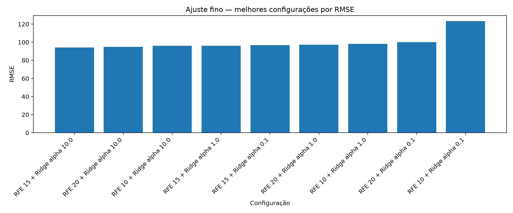

Experimento 08
Ajuste fino do modelo
Avaliar combinações de RFE e valores de regularização da Ridge Regression.
Resultado principal
A melhor configuração Ridge testada foi RFE 15 + alpha 10,0, com RMSE 94,235 µm/m e R² 0,751.
Decisão metodológica
Comparar essa configuração com os melhores modelos baseados em árvores antes da consolidação final.
Evidência tabular
| MAE | RMSE | R2 | acuracia_sinal | modelo | MAE_cv_medio | MAE_cv_desvio | RMSE_cv_medio | RMSE_cv_desvio | R2_cv_medio | R2_cv_desvio | n_features | alpha |
|---|---|---|---|---|---|---|---|---|---|---|---|---|
| 63.10297994873182 | 94.23489946908914 | 0.7505350235858931 | 0.7975120939875605 | RFE 15 + Ridge alpha 10.0 | 63.10813755077123 | 5.29668810381841 | 93.55538003322094 | 11.440743609305011 | 0.7514845920369083 | 0.04615411919540885 | 15 | 10.0 |
| 63.02672543456225 | 94.92288610925533 | 0.7468791576239555 | 0.7954388389771941 | RFE 20 + Ridge alpha 10.0 | 63.03401396805993 | 5.8198951045551635 | 94.06210227287728 | 12.909503444426084 | 0.7485443666963398 | 0.05222065829014844 | 20 | 10.0 |
| 64.96295083214623 | 95.98026374249284 | 0.7412085545092074 | 0.78852798894264 | RFE 10 + Ridge alpha 10.0 | 64.96748272733633 | 5.490737777106577 | 95.3532343330232 | 11.09172243956647 | 0.741810014336982 | 0.046414967396504435 | 10 | 10.0 |
| 62.54508284883887 | 96.08032750595626 | 0.7406686696689615 | 0.796821008984105 | RFE 15 + Ridge alpha 1.0 | 62.55426990864373 | 7.134757158273368 | 94.82464438468189 | 15.639995139285745 | 0.7432391791014963 | 0.06590210713362883 | 15 | 1.0 |
| 63.96734280060705 | 96.6168489961235 | 0.737764322610067 | 0.7816171389080857 | RFE 15 + Ridge alpha 0.1 | 63.97660909773972 | 8.026072876357787 | 95.4928143001513 | 14.837790139220502 | 0.7395647054868079 | 0.06388768407644056 | 15 | 0.1 |
| 63.78970504361445 | 97.20802414667853 | 0.7345453912391275 | 0.7961299239806496 | RFE 20 + Ridge alpha 1.0 | 63.79845373830042 | 6.819583188196723 | 95.8837114048773 | 16.152229618489276 | 0.7373635095682234 | 0.06889990354352415 | 20 | 1.0 |
| 64.57330885795605 | 98.15436702374573 | 0.7293517072868814 | 0.7816171389080857 | RFE 10 + Ridge alpha 1.0 | 64.5832572159954 | 8.229819910181861 | 96.891665886946 | 15.845443540749871 | 0.7316836636107699 | 0.06890993741068435 | 10 | 1.0 |
| 65.09816556814418 | 99.95776136998224 | 0.7193150797877459 | 0.7816171389080857 | RFE 20 + Ridge alpha 0.1 | 65.11129240979373 | 8.269203676238904 | 98.34765131559793 | 18.048608331242878 | 0.7233735637583165 | 0.07953877779862624 | 20 | 0.1 |
| 86.56329390211401 | 123.32059302178713 | 0.5727744206744649 | 0.6744989633724948 | RFE 10 + Ridge alpha 0.1 | 86.57395709773441 | 12.081279440310789 | 122.19597711985402 | 16.810774820336825 | 0.5757039359267675 | 0.08798887487581757 | 10 | 0.1 |

Figura gerada pelo Experimento 08: top_configuracoes_rmse.png
Rastreabilidade
Este experimento sustenta diretamente a seção 4.8 dos resultados parciais da dissertação.